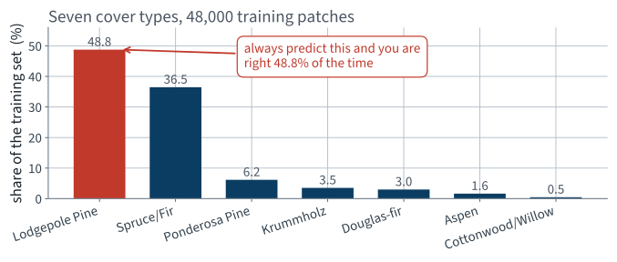
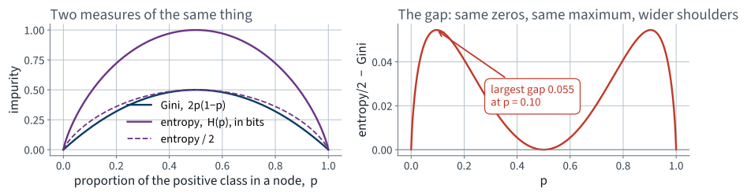
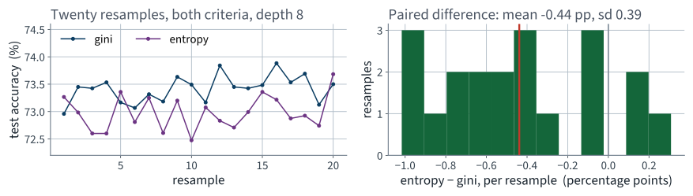
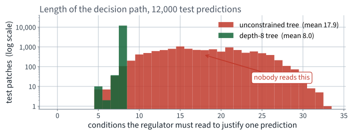
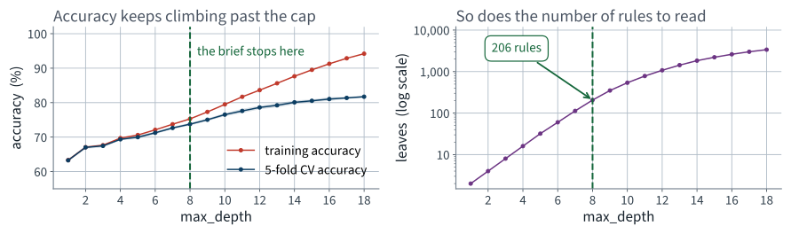
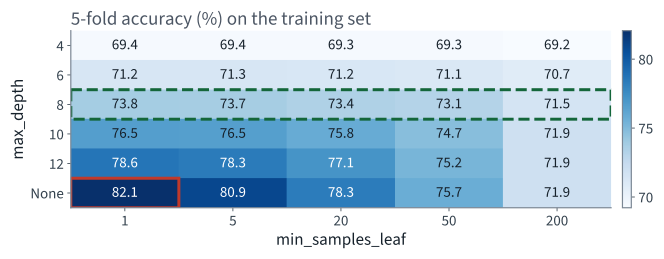
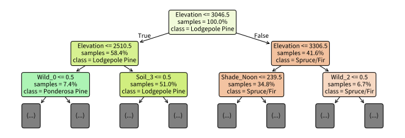
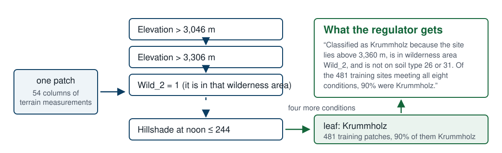
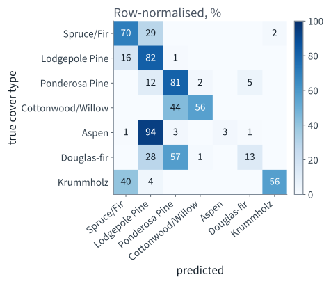
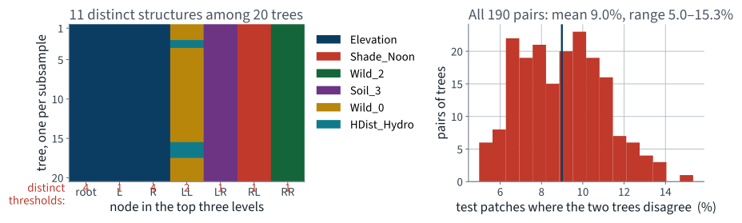

Forest CoverType · seven species from a contour map
Lecture 6 Géron Ch. 5
Applications of Machine Learning
BSc Mathematics of Artificial Intelligence · Third year
The models fitted so far predict with a weighted sum: $\boldsymbol\theta^{\intercal}\mathbf{x}$, fitted by solving a linear system or by descending a convex surface.
Pipeline passed to cross-validation. Nothing derived from the
test set in the training path. Fixed seeds. Report the fold scores, not only
the mean.
Lecture 3 reached for a random forest once, to draw a better precision–recall curve, and did not say what one was. Today’s model is the thing a forest is made of: not a weighted sum at all, but a sequence of yes/no questions — and the sequence is the explanation.
The fourth block is the one to stay awake for. Both failure conditions are properties of the algorithm rather than accidents, and the second of them is the whole reason the next lecture exists.
First fifteen minutes
15 minutes
An agency that manages a national forest has to publish a map of forest cover type — which species dominates each 30 by 30 metre patch of ground — over an area far too large to survey on foot.
No satellite imagery, no remote sensing. Numbers a surveyor could in principle read off a contour map.
The map is not an internal artefact. It goes into the public record, and it is used to decide:
A landowner who is refused a permit is entitled to ask why. So is a court.
Note the word individual. Not “which variables matter in general”. Not “the model is 88% accurate”. This patch, this answer, this reason.
Requirements of this shape are ordinary in regulated work — credit, insurance, medicine, planning. They are worth meeting deliberately rather than discovering late.
“Human-readable” is not a testable condition. Before writing any code, negotiate it into one. We asked, and this is what came back:
| Requirement | Testable form |
|---|---|
| Readable by a non-specialist | stated as conditions on the measured columns, not on transformed ones |
| Short enough to check | at most 8 conditions per prediction |
| Auditable | the same patch gives the same justification, and the rule can be applied by hand |
Eight is the number the agency chose. It is arbitrary — and it is now a hyperparameter fixed by the brief rather than by cross-validation. That is unusual and worth noticing.
| Model | Can it justify one prediction? |
|---|---|
| Logistic regression | partly — a weighted sum of 54 terms is a reason, but not a short one |
| k-nearest neighbours | “because these 5 other patches looked similar” |
| SVM with an RBF kernel | no — the decision surface has no finite description |
| Neural network | no |
| Decision tree | yes — the path from root to leaf is the justification |
This is the first problem in the course where the model family is chosen by the shape of the answer rather than by the data.
| Question | Answer | Because |
|---|---|---|
| Supervision | supervised | every surveyed patch carries its species |
| Task | multiclass classification | seven mutually exclusive cover types — not multilabel, not multioutput |
| Learning mode | batch, offline | the survey is finished; nothing streams in |
| Assumptions | two, stated | the classes are exhaustive and exclusive; the survey represents the mapped area |
The Forest CoverType survey: 581,012 patches of 30 by 30 metres in the Roosevelt National Forest, Colorado, each with 54 cartographic measurements and a surveyed cover type.
| Columns | How many | Kind |
|---|---|---|
| Elevation, aspect, slope, hillshade, distances | 10 | quantitative |
| Wilderness area | 4 | already one-hot |
| Soil type | 40 | already one-hot |
No missing values, no text columns, nothing to impute. This one arrives clean — so the difficulty is entirely elsewhere.
from sklearn.datasets import fetch_covtype
cover = fetch_covtype(as_frame=True) # ~11 MB, cached after the first call
X_all, y_all = cover.data, cover.target
print(X_all.shape, y_all.nunique()) # (581012, 54) 7
fetch_covtype downloads once into
~/scikit_learn_data and reads from disk afterwards. The classes
are labelled 1 to 7, not 0 to 6 — a default nobody asked for, and one
that will bite an index somewhere if you forget it.
X, _, y, _ = train_test_split(X_all, y_all, train_size=60_000,
stratify=y_all, random_state=42)
X_train, X_test, y_train, y_test = train_test_split(
X, y, test_size=0.2, stratify=y, random_state=42)
60,000 patches out of 581,012, stratified so the class proportions are preserved exactly, then split 48,000 / 12,000.
Subsampling for speed is a legitimate choice and a reportable one. Subsampling and not mentioning it is not.
The rule has not changed, and neither has the reason.
assert len(X_train) == 48_000 and len(X_test) == 12_000
assert set(X_train.index).isdisjoint(X_test.index)
assert X_train.isna().sum().sum() == 0
Three assertions, three seconds, and the shape of the next ninety minutes is now guaranteed rather than hoped for.
Stratifying on the label matters here: with one class at 0.5% of the data, an unstratified split can hand a fold almost none of it.
>>> y_train.value_counts()
2 23405 Lodgepole Pine
1 17501 Spruce/Fir
3 2954 Ponderosa Pine
7 1694 Krummholz
6 1435 Douglas-fir
5 784 Aspen
4 227 Cottonwood/Willow
The commonest class is a hundred times the rarest.
You met this shape in Lecture 3, on a rare-event detector, where a classifier that never fired scored 90.96%. It did not go well then either.

Two species are 85% of the ground. Whatever we build has to be judged against the model that always says “Lodgepole Pine”.
Seven classes, no natural ordering, no asymmetric cost stated by the agency. The default is accuracy — reported, as always, beside the number that says what nothing scores.
from sklearn.dummy import DummyClassifier
dummy = DummyClassifier(strategy="most_frequent").fit(X_train, y_train)
print(f"{dummy.score(X_test, y_test):.1%}") # 48.8%
| Model | Test accuracy | Species it can ever predict |
|---|---|---|
| Always “Lodgepole Pine” | 48.8% | 1 of 7 |
Anything below 48.8% is worse than a constant. The distance above it is the only part you actually earned.
Keep both numbers in mind. We will measure the price of the constraint later in the lecture and it is larger than most people guess.
The mathematics
Géron §5.2–5.4 — today we grow a tree, so today we should know what growing one optimises
20 minutes · examinable
You called DecisionTreeClassifier().fit().
It chose one feature and one threshold at every node. Chose them to minimise what?
criterion="gini" and
criterion="entropy". Deciding whether that switch is worth
touching requires knowing what the two quantities are and how they differ,
and the answer also explains why a tree ignores a rare class.
A node is pure when some $p_k = 1$. It is uniform when every $p_k = 1/K$.
No probability theory beyond a finite distribution, and no calculus beyond a second derivative.
Before choosing a formula, say what any acceptable one must satisfy. Two conditions, and they are the whole specification:
Condition (i) says a node we have finished with scores zero. Condition (ii) says the node we know least about scores worst.
Everything else — the choice between Gini and entropy — is a choice within this specification, not a disagreement about it.
Both of Scikit-Learn’s criteria are of one shape: sum a single function of each class’s share.
with $\varphi:[0,1]\to\mathbb{R}$ strictly concave and $\varphi(0)=\varphi(1)=0$.
Concavity is not decoration. It is the property that delivers both conditions of Step 1 and the guarantee in Step 7, and it is the only property either proof uses.
$\varphi(0)=\varphi(1)=0$ says a class that is absent and a class that is everything both contribute nothing to disorder.
Take $\varphi(p) = p(1-p)$:
Gini impurity — Scikit-Learn’s default
Take $\varphi(p) = -p\log_2 p$, with $\varphi(0) = 0$ by the limit $p\log p \to 0$:
Shannon entropy, in bits
(i) $\varphi \ge 0$ on $[0,1]$ and $\varphi(p) = 0$ only at $p \in \{0,1\}$, for both choices. So $I(\mathbf{p}) = 0$ forces every $p_k \in \{0,1\}$, and since they sum to 1 exactly one is 1: the node is pure.
(ii) By Jensen’s inequality on the concave $\varphi$,
so $I(\mathbf{p}) \le K\,\varphi(1/K)$.
Strict concavity makes the inequality an equality only when every $p_k$ is equal. The maximum is attained at the uniform distribution and nowhere else.
| $K$ | $G_{\max}$ | $H_{\max}$ (bits) |
|---|---|---|
| 2 | 0.5 | 1 |
| 7 | 6/7 ≈ 0.857 | $\log_2 7$ ≈ 2.807 |
The two are on different scales. Any comparison of their shapes has to divide one of them first, and saying which is part of the comparison.
A split sends $m_{\text{L}}$ instances left and $m_{\text{R}}$ right, $m_{\text{L}} + m_{\text{R}} = m$. Its cost is the impurity of the two children, weighted by their size:
searched over every feature $k$ and every threshold $t_k$
Equivalently, maximise the impurity decrease $\Delta I = I_{\text{parent}} - J(k,t_k)$. The parent term is the same for every candidate at this node, so the two are the same search.
Every instance goes left or right, so for each class the parent share is the size-weighted mixture of the children’s shares:
Apply concavity of $\varphi$ to that convex combination and sum over $k$:
So the greedy search can always stop safely: no split ever makes things worse, and $\Delta I = 0$ is the signal that this node has nothing left to gain.
Both criteria rank candidate splits by $\Delta I$, and $\Delta I$ depends only on the two child distributions and their weights.
So take two candidate splits that send the same numbers left and right. If A’s two children each majorise B’s, then $J_{\text{A}} \le J_{\text{B}}$ for every concave $\varphi$: Gini and entropy must agree that A is better. Neither the choice of $\varphi$ nor its scale can change it.
Only on two candidate splits whose child distributions are not comparable in that ordering. Then the ranking depends on the shape of $\varphi$. How far can they part? On a two-class node with $p_1 = p$,
$H$ has maximum 1 and $G$ has maximum $1/2$, so compare $H/2$ with $G$. Both are then $0$ at $p\in\{0,1\}$ and $1/2$ at $p = 1/2$: they agree at three points, and the largest gap between them anywhere else is 0.055, at $p \approx 0.10$ and again at $p \approx 0.90$.
So two candidates whose weighted impurities differ by more than 0.055 are ranked identically by both criteria. Disagreement needs a close call and an incomparable pair.

Same zeros, same maximum, different shoulders. Entropy penalises a nearly-pure node more heavily than Gini does.
That last sentence is a claim about behaviour. We have a dataset, a model and ninety minutes. Do not accept it — measure it.
for seed in range(20):
Xs, _, ys, _ = train_test_split(X_train, y_train, train_size=0.8,
stratify=y_train, random_state=seed)
for crit in ("gini", "entropy"):
t = DecisionTreeClassifier(criterion=crit, max_depth=8,
random_state=42).fit(Xs, ys)
# accuracy, the root split, and the 12,000 test predictions
Twenty resamples, both criteria on the same resample each time, so the comparison is paired and the resample-to-resample noise cancels.

Gini is above entropy on 17 of the 20 resamples. The difference is small, and it is not noise.
| Question | Measured |
|---|---|
| Resamples where the two chose the same root feature | 20 of 20 |
| Test predictions on which the two trees agree | 85.3% |
| Mean accuracy, gini | 73.4% |
| Mean accuracy, entropy | 73.0% |
| Paired difference, entropy − gini | −0.44 ± 0.39 points |
Step 8 predicted this shape: the two criteria pick the same first question every time — the root split is not a close call — and then disagree about one prediction in seven, deep in the tree where candidates are separated by a hair.
Three statements, all true, and only the third is a recommendation:
max_depth is worth later in this lectureStep 7 guarantees each split is locally harmless. It says nothing about the sequence of splits, and CART chooses that greedily: the best split at this node, then never reconsidered.
So the tree you get is a function of the algorithm as much as of the data. That is the seed of this lecture’s second failure condition.
The method
40 minutes · examinable
A binary tree. Each internal node asks one question about one feature; each leaf carries a prediction.
| Operation | Cost | Why |
|---|---|---|
| Predict one instance | $O(\log_2 m)$ | one root-to-leaf path of a roughly balanced tree |
| Train | $O(n \times m \log_2 m)$ | at every node, sort and scan all $n$ features |
Prediction does not depend on $n$, which is why reading a prediction costs the same as making it. That is what makes the justification free.
from sklearn.tree import DecisionTreeClassifier
free = DecisionTreeClassifier(random_state=42) # no depth limit
free.fit(X_train, y_train)
print(f"depth {free.get_depth()}")
print(f"leaves {free.get_n_leaves():,}")
print(f"train accuracy {free.score(X_train, y_train):.1%}")
depth 33
leaves 5,699
train accuracy 100.0%
100.0%. A tree with 5,699 leaves and 48,000 training patches has eight patches per leaf on average. Of course it is perfect on its own data.
| Unconstrained tree | Accuracy |
|---|---|
| On the training set | 100.0% |
| 5-fold cross-validated, on the training set | 82.1% |
| On the test set (looked at once, at the end) | 82.6% |
82% is a real number and it is far above the 48.8% baseline, so the tree family works on this problem.
But count what a prediction rests on. The tree is 33 levels deep, and the requirement allows eight conditions.
# decision_path marks every node visited, root and leaf included,
# so the number of conditions applied is that count minus one
path = free.decision_path(X_test)
lengths = np.asarray(path.sum(axis=1)).ravel() - 1
print(f"mean {lengths.mean():.2f} max {lengths.max()}")
mean 17.88 max 33
The brief allows eight conditions. The average justification this tree produces is 17.88, and the worst is 33.
The maximum equals get_depth(), which is
the cheap check that the off-by-one went the right way.

One produces a reason a person can check; the other produces a paragraph nobody will read.
Because nothing stopped it. A decision tree is a nonparametric model: the number of parameters is not fixed before training, so the structure is free to follow the data as far as the data goes.
A linear model cannot do this. Its parameter count is decided by the number of columns before it sees a single row.
| Parameter | What it controls |
|---|---|
max_depth | hard ceiling on the length of every path — and therefore on the justification |
min_samples_split | a node with fewer instances than this is never split |
min_samples_leaf | a split that would leave a child smaller than this is rejected |
max_leaf_nodes | ceiling on the total number of leaves — on the number of rules |
max_features | how many features are considered at each split |
Increasing the min_* parameters or decreasing the
max_* ones regularises the model.
Two of these control accuracy. One of them —
max_depth — is fixed for us by the brief.
from sklearn.model_selection import StratifiedKFold, cross_validate
cv = StratifiedKFold(n_splits=5, shuffle=True, random_state=42)
for d in range(1, 19):
clf = DecisionTreeClassifier(max_depth=d, random_state=42)
scores = cross_validate(clf, X_train, y_train, cv=cv,
return_train_score=True, n_jobs=-1)
Cross-validated, on the training set. The test set is not consulted to choose anything — that rule survives from Lecture 2 and will survive to the last lecture.

Cross-validated accuracy is still climbing at depth 18. Every point of it is bought with more rules than anyone will read.
| max_depth | CV accuracy | Leaves | What a justification looks like |
|---|---|---|---|
| 1 | 63.3% | 2 | one condition |
| 3 | 67.5% | 8 | a sentence |
| 8 | 73.8% | 206 | a short paragraph — the brief |
| 18 | 81.7% | 3,377 | nobody reads this |
Between depth 8 and depth 18 there are 8.0 points of accuracy. That is the measured price of the eight-condition requirement, and it is a number worth putting in front of the agency.
It is not, however, ours to spend. The requirement is the brief.
max_depth=None. The brief says
max_depth=8. Cross-validation does not get a vote on
this one, because it is not optimising the thing the agency is
buying.
The first time in this course that the honest answer to “what does the search say?” is “the search is answering the wrong question”. It will not be the last.
Bring the 8.0-point figure to the agency. Perhaps they
will trade a condition or two for it. That is a conversation, not a
GridSearchCV.
from sklearn.model_selection import GridSearchCV
grid = {"max_depth": [4, 6, 8, 10, 12, None],
"min_samples_leaf": [1, 5, 20, 50, 200]}
search = GridSearchCV(DecisionTreeClassifier(random_state=42), grid,
cv=cv, n_jobs=-1).fit(X_train, y_train)
# 30 combinations x 5 folds = 150 fits
We search the whole grid anyway — including the depths we are not allowed to use — because the rows we cannot pick are exactly what tells the agency what its requirement costs.

The red cell is the best model. The green row is the set of models we are allowed to ship.
min_samples_leaf barely
matters — 73.8% at 1, 71.5% at 200. At depth 8 the depth
limit binds first, so the leaf-size limit has almost nothing left to
domin_samples_leaf=1 falling to 71.9% at 200.
With no depth limit, the leaf size is the regularisationSo the grid’s answer under the cap is
min_samples_leaf=1. We are not going to ship it
— next slide.
min_samples_leaf=20The model states its justification as “91% of the 463
training patches in this leaf”. At min_samples_leaf=1 that
becomes “100% of the 1” — a single surveyed patch
wearing the grammar of evidence. The brief requires a justification that can be
audited; that is not one.
| leaf | CV accuracy | |
|---|---|---|
| what cross-validation prefers | 1 | 73.75% |
| what the brief requires | 20 | 73.35% |
| price of auditability | — | 0.40 points |
Same reason we overruled it on depth: when the brief constrains the model, the grid does not get a vote. And that 0.40 goes to the agency — a constraint that overrules a measurement has to show the measurement it overruled.
tree = DecisionTreeClassifier(max_depth=8, min_samples_leaf=20,
random_state=42).fit(X_train, y_train)
| Unconstrained | Depth 8, leaf 20 | |
|---|---|---|
| Leaves | 5,699 | 163 |
| Columns consulted, of 54 | 47 | 24 |
| Mean conditions per justification | 17.88 | 7.97 |
| Smallest leaf | 1 | 20 |
| Training accuracy | 100.0% | 74.4% |
| Cross-validated accuracy | 82.1% | 73.4% |
74.4% on the training set, 73.4% cross-validated. A gap of one point.
The unconstrained tree’s gap was 17.9 points. The depth limit did not only shorten the justification; it removed almost all of the overfitting as a side effect.
Which leaves a question worth holding on to: if the constrained tree barely overfits, why is it still nearly nine points worse than the unconstrained one? The answer is the subject of the last block, and of the next lecture.
Two routes, and you want both. The classic one is
export_graphviz to a .dot file; the portable one is
plot_tree, which draws into a matplotlib axis.
from sklearn.tree import export_graphviz, plot_tree
export_graphviz(tree, out_file="cover.dot", max_depth=2,
feature_names=names, filled=True)
# then, in a terminal: dot -Tpng cover.dot -o cover.png
plot_tree(tree, max_depth=2, feature_names=names,
class_names=COVER_NAMES, filled=True, proportion=True, ax=ax)
max_depth=2 in the drawing call is essential: all
eight levels at a readable font size is about two metres of paper.
not examinable —
engineering The dot binary is not a Python package and is
not on a stock Colab runtime. The call succeeds, writes a file, and nothing
renders.

The first three questions the model asks about any patch in Colorado. Two of them are about elevation.
>>> print(export_text(tree, feature_names=names, max_depth=2, decimals=0))
|--- Elevation <= 3046
| |--- Elevation <= 2510
| | |--- Wild_0 <= 0
| | | |--- truncated branch of depth 6
| | |--- Wild_0 > 0
| | | |--- truncated branch of depth 2
| |--- Elevation > 2510
| | |--- Soil_3 <= 0
| | | |--- truncated branch of depth 6
export_text needs no plotting library at all, and
it is what you paste into an email. For a model whose selling point is that a
person can read it, that matters.
| Field | Meaning |
|---|---|
Elevation <= 3046.5 | the question; go left if true |
gini = 0.65 | Step 3’s $G$ at this node — 0 would be a single species |
samples = 48,000 | training patches that reached this node |
value = [0.36, 0.49, ...] | their class distribution $\mathbf{p}$, seven entries |
class = Lodgepole Pine | the majority — what a leaf here would predict |
The threshold is 3,046.5 rather than 3,046 because CART puts the split midway between two adjacent observed values. Nothing in the data sits at 3,046.5 metres.
Trees need no feature scaling at all: $x_k \le t_k$ is invariant under any strictly increasing transformation of $x_k$, so standardising a column changes its thresholds and nothing else.
def justify(tree, x, names):
t, node, out = tree.tree_, 0, []
while t.children_left[node] != -1:
f, thr = t.feature[node], t.threshold[node]
left = x[f] <= thr
out.append((names[f], "<=" if left else ">", thr, x[f]))
node = t.children_left[node] if left else t.children_right[node]
return out, node
Nine lines, no library beyond what is already imported. The
entire justification mechanism is tree_.children_left,
tree_.feature and tree_.threshold.
>>> justify(tree, X_test.iloc[27].values, names)
1. Elevation = 3,763 > 3,046
2. Elevation = 3,763 > 3,306
3. Wild_2 = 1 > 0
4. Soil_31 = 0 <= 0
5. Elevation = 3,763 > 3,360
6. HDist_Fire = 3,020 > 364
7. Shade_Noon = 200 <= 244
8. Shade_3pm = 133 <= 196
-> Krummholz (91% of the 463 training patches in this leaf)
Eight conditions. Every one of them a measurement a surveyor took. The true species of that patch is Krummholz.

The path is the justification. No extra machinery, no approximation, no second model explaining the first.
91% of the 463 training patches in that leaf were Krummholz.
predict_proba returns exactly those leaf proportions —
so a tree’s “probabilities” are piecewise constant and
identical for every patch reaching the same leaf73.0%
on 12,000 test patches the model has never seen.
Against a constant baseline of 48.8%, and every choice above was made on cross-validated folds of the training set.
from sklearn.metrics import ConfusionMatrixDisplay, classification_report
print(classification_report(y_test, tree.predict(X_test),
target_names=COVER_NAMES, digits=3))
ConfusionMatrixDisplay.from_estimator(tree, X_test, y_test,
normalize="true")
normalize="true" divides by the row total,
so each row reads as “of the patches that really were this species, where
did they go?”

Read the Aspen row. Almost all of it is in the Lodgepole Pine column.
| Cover type | Share of the data | Recall |
|---|---|---|
| Lodgepole Pine | 48.8% | 82.0% |
| Ponderosa Pine | 6.2% | 80.8% |
| Spruce/Fir | 36.5% | 69.6% |
| Krummholz | 3.5% | 56.4% |
| Cottonwood/Willow | 0.5% | 56.1% |
| Douglas-fir | 3.0% | 12.8% |
| Aspen | 1.6% | 2.6% |
The model finds fewer than 3 Aspen patches in every hundred. On the headline number that costs 1.6 points and is invisible.
max_depth=8 there are at most 256 leaves to allocate
across seven species, and the algorithm spends them where the instances
areIt is a property of the objective in Step 6, not a bug in the implementation. Read Step 6 again and you could have predicted it.
class_weight="balanced" multiplies each
instance’s contribution to $J$ by the inverse of its class frequency, so
every class carries the same total weight.
A different model answering a different question. Which one the agency wants is not a machine learning decision — but quoting either number without the other is an argument rather than a measurement.
A model can be fit for one purpose and unfit for another, in the same deployment. Saying which is which is the job.
This is Lecture 2’s error slice applied to classes rather than to districts. Same idea, same obligation.
The last fifteen minutes
15 minutes · examinable
DecisionTreeRegressor is CART with the impurity
of Step 6 replaced by the mean squared error of the node:
where a node’s MSE is measured about its own mean, $\frac{1}{m}\sum_{i}(y^{(i)} - \bar{y})^2$.
A leaf predicts the mean of the training targets that reached it, so the output is a step function — piecewise constant, one step per leaf.
Every split is of the form $x_k \le t_k$, so every decision boundary is perpendicular to an axis.
You have a model whose every prediction comes with a rule a person can read.
Fit it again — same hyperparameters, same seed — on almost the same training set. Ninety per cent of the same rows.
How similar are the two sets of rules?
Almost everybody expects “very”. The answer has two halves and they point in opposite directions.
trees, preds = [], []
for seed in range(20):
Xs, _, ys, _ = train_test_split(X_train, y_train, train_size=0.9,
stratify=y_train, random_state=1000 + seed)
t = DecisionTreeClassifier(max_depth=8, min_samples_leaf=20,
random_state=42).fit(Xs, ys)
trees.append(t)
preds.append(t.predict(X_test)) # the same 12,000 test patches
Twenty trees. Each sees 90% of the same training set, so any
two of them share about 80% of their rows. Everything else is identical
— including random_state.
| Over the 20 refits | Measured |
|---|---|
| Accuracy, mean | 72.99% |
| Accuracy, standard deviation | 0.25% |
| Accuracy, range | 72.39% – 73.38% |
| Pairwise prediction disagreement, over all 190 pairs | 9.1% |
| … worst pair | 15.4% |
| Test patches all twenty trees agree on | 71.4% |
Two trees with the same accuracy disagree about the species of one patch in eleven.
| Top of the tree | Across the 20 refits |
|---|---|
| Feature at the root | Elevation, 20 times out of 20 |
| Distinct thresholds at the root | 4, spanning 15 metres of elevation |
| Distinct structures in the top three levels | 11 of 20 |
| Leaves in the whole tree | 151 to 170 |
| Columns the tree consults | 22 to 27 of 54 |
The part you put on a slide is stable. The part that decides is not.

Left: the questions barely move. Right: one prediction in eleven changes anyway.
A stable metric is not evidence of a stable model. It is evidence that you measured the wrong thing.
Failure condition 1 was the same fact in a different hat. Rotating the data changes which axis-aligned split wins by a hair, and the tree below it changes completely.
The next lecture derives what averaging does to variance, and builds the models that exploit it. It also shows what the repair costs: the justification we spent this lecture earning.
Examinable: the impurity derivation in full — the two conditions, both formulas, the maxima, the CART objective, $\Delta I \ge 0$, and why the two criteria usually agree. Reading a node and a root-to-leaf path. What each regularisation hyperparameter controls. Both failure conditions, stated as properties.
not examinable —
engineering Graphviz, Colab mechanics, wall-clock timings, the internals
of fetch_covtype.
max_depth from 8 to 12 and re-run the trace. Accuracy
rises by about four points, the justification roughly doubles in length, and
the pair is the trade this whole lecture is about.
01 · What machine learning is, and how we will work
03 · Classification and its metrics
05 · Regularisation and the bias–variance trade-off
07 · Ensembles and random forests
08 · Dimensionality reduction and unsupervised learning
09 · Neural networks, from the perceptron up
14 · Detection and segmentation
18 · Attention and transformers
19 · Information retrieval: the lexical foundation
20 · Information retrieval: dense retrieval
21 · Recommender systems: from ratings to factors
22 · Recommender systems: neural, and evaluated honestly
23 · Vision transformers and multimodal retrieval
24 · Generation, retrieval-augmented systems, and where this leaves you
| Topic | Chapter |
|---|---|
| Training, visualising and reading a decision tree | 5 |
| Gini impurity, entropy, and choosing between them | 5 |
| The CART cost function and greediness | 5 |
| Computational complexity of trees | 5 |
| Regularisation hyperparameters; nonparametric models | 5 |
| Regression trees; axis sensitivity; instability | 5 |
| Multiclass classification, confusion matrices, recall | 3 (Lecture 3) |
| Cross-validation and grid search | 2 (Lecture 2) |
Not presented — for afterwards
five, in the style of the written paper
decision_path().sum() - 1. Explain the $-1$. [3]Solutions on Lecture 7’s deck.
Solutions on Lecture 7’s deck.
The five set at the end of Lecture 5
not part of this lecture
1. Write the bias–variance decomposition of the expected squared error, and name the one term no model can…
$\mathbb{E}[(y-\hat f)^2] = \text{bias}^2 + \text{variance} + \sigma^2$; the noise $\sigma^2$ cannot be reduced.
2. A learning curve shows training and validation error both high and close together, and flat as data is added.…
High bias. More data would not help.
3. Ridge adds $\alpha I$ to $X^{\mathsf T}X$ before inverting. Give the numerical consequence, in terms of the…
It raises every eigenvalue by $\alpha$, so the condition number falls and the inverse is stable.
4. Why must features be scaled before ridge or lasso, when they need not be for ordinary least squares?
The penalty is on the coefficients, and a coefficient’s size depends on its feature’s units.
5. You tune $\alpha$ over a grid using cross-validation, then report the best cross-validated score as your…
The best-of-grid score is optimistic: it is a minimum over the same folds used to choose.
Lecture 7 · Géron Ch. 6
The variance of an average of correlated predictors, derived — one
result that explains bagging, feature subsampling and random thresholds
Out-of-bag evaluation, feature importance, boosting and stacking
And what averaging costs: the justification you spent today earning
Run the Lecture 6 notebook first